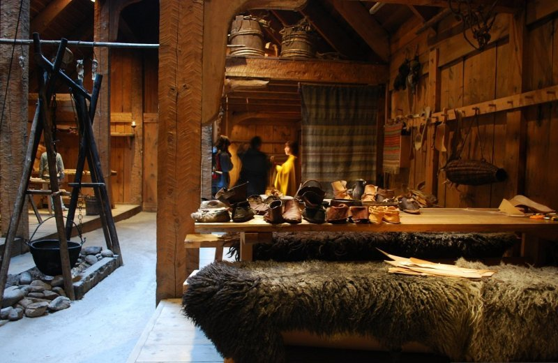
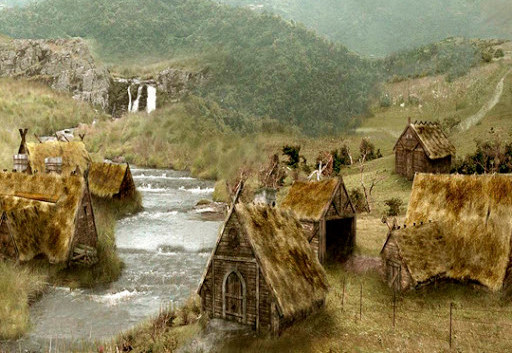

Епоха вікінгів
Епоха вікінгів
 Уклад життя та господарство
Уклад життя та господарство
Землі, заселені вікінгами, були гористі та лісисті — і мало придатні для хліборобства. Общини вікінгів мешкали малими оселями, керували якими так звані «ярли» — найбагатші землевласники. Деякі вікінги мали рабів («тралів»), але у більшості своїй всі вони були вільними («карлами»). За ментальністю вікінги мали жорстокий норов, були міцні тілом, звиклими до труднощів. Вони дбали за укріплення свого шлюбу та родинних зв'язків, були взірцевими батьками своїх родин.
Вікінги одягалися в товстий та теплий одяг. Часто свій одяг вони змащували різними смолами, щоб захиститися від води та зберегти тепло. Під час походів надягали кольчугу та сталеві шоломи. Досі не доведено те, що вікінги носили шоломи з рогами, бо всі знайдені шоломи були округлими і лише ритуальні шоломи були у формі птахів та інших тварин. Часто волосся вікінгів не вміщалося під шолом через те, що вони його не стригли, так само як і бороди, це вважалося ганебно. Тільки справжні воїни носили довге волосся та бороду, зрадникам та тим, хто втікав з поля бою обпалювали волосся.
З початку 700-х років у зв'язку з ростом населення (демографічний вибух) кількість вільної придатної для господарювання землі почала зменшуватися. До того ж, у вікінгів існувала традиція, згідно з якою наслідування землі і всього майна переходило тільки до першого сина, інші ж — другі і треті сини — не одержавши нічого, відправлялися на пошуки нових родючих земель. Були це воїни-пірати, чия зброя складалася із важкого меча й сокири, якими вікінги володіли майстерно: вони грабували кораблі, мирні поселення, монастирі й навіть окремі міста. Зазвичай вікінги зганяли на берег і забивали худобу, вели людей у рабство, а тих, хто пручався, вбивали.
- 
- 